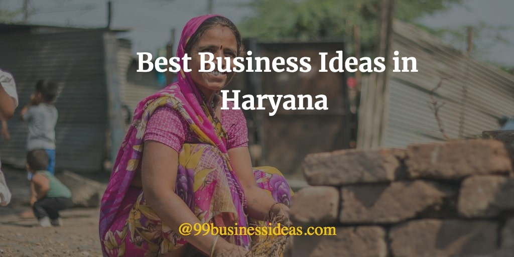
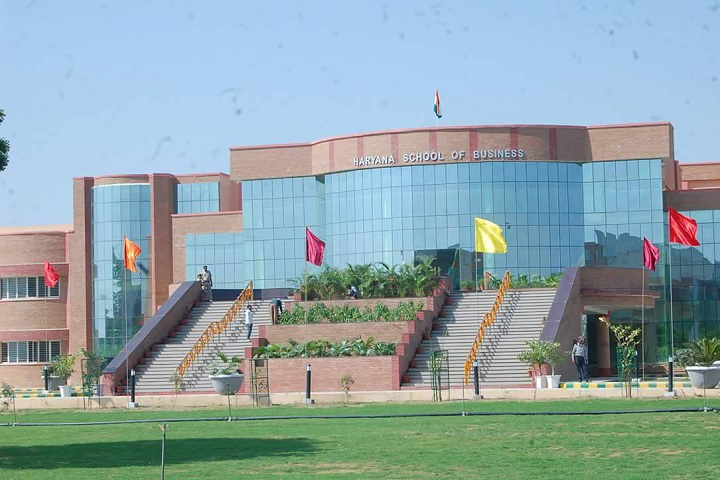

Due to the government's business-friendly policies, Haryana is ranked third in 'Ease of Doing Business.' In terms of ease
of doing business, Haryana topped the Northern States. The Haryana government has encouraged entrepreneurs to invest in
the state. Entrepreneurs, on the other hand, praised the state government for providing a variety of services, including
a system for issuing various sorts of No Objection Certificates (NOCs) in a timely way, an online application system, and
appropriate electrical supply.
All 301 reforms requested by the Business Reform Action Plan(2020-21) have been accomplished by the state. Land registration,
approval of building plans, approval of local bodies, electricity and water (useful services) connections, contract enforcement,
creation of single-window desks, strengthening of investment facilitation helpdesks, area-wise licenses, and many other
approvals comprise these improvements. Furthermore, the state completed all 45 reforms outlined in the District Reform Action
Plan - 2019.

Ease of access to Finance Business in Haryana:
The State Government's "Scheme for Assistance for Startups in the State," notified under the provisions of its Haryana
Enterprises and Employment Policy 2020, provides financial assistance in the form of a seed grant of up to Rs 10 lakh,
a lease rental subsidy of up to Rs 5 lakh, and 100 per cent net SGST reimbursement for seven years, among other
incentives, to encourage startups in Haryana.
For 100 companies in 'A' category blocks, 200 startups in 'B' category blocks, 300 startups in 'C' category blocks,
and 400 startups in 'D' category blocks in the state, the government will award seed funding of up to Rs 10 lakh per
startup under the scheme. The final authority on seed grant idea selection would be a five-member state government
comittee chaired by the Administrative Secretary, Haryana Department of Industries and Commerce.
There will also be a reimbursement of 30% of lease rental subsidies for general startups and 45 per cent for firms
with sole women founders for one year up to Rs 5 lakh. The government has also agreed to grant an interest subsidy
of 8% to startups registered in the state for a period of five years, up to a maximum of Rs 20 lakh per year.
Startups would be given financial assistance of up to Rs 2.5 lakh for national acceleration programmes and Rs 5 lakh
for international acceleration programmes.

Initiatives by the Government:
The Industrial and Investment Policy of 2011 provides a wide range of economic and policy incentives for enterprises.
It also includes sector-specific policies, particularly in the IT and tourist sectors. The Haryana State Industrial
and Infrastructure Development Corporation Ltd (HSIIDC) is the state's principal industrial development and investment
facilitation organisation, responsible for ensuring that entrepreneurs investing in the state have access to reliable
and efficient facilities.
Haryana's cumulative Foreign Direct Investment (FDI) inflows were US$ 1.7 billion in FY21 and US$ 2.42 billion between
October 2019 and March 2021, according to the Department for Promotion of Industry and Internal Trade (DPIIT).
To achieve consistent economic growth, the state has taken many initiatives to develop industrial infrastructure.
A New Industrial Policy termed Haryana Enterprises and Employment Policy - 2020 has also been introduced to foster
an investment-friendly environment. Its goals include
* creating 5 lakh employment
* attracting Rs 1 lakh crore in investment,
* doubling exports to Rs 2 lakh crore, and
* amending several state legislation (Acts, Rules, and Guidelines) to make them more investor-friendly.